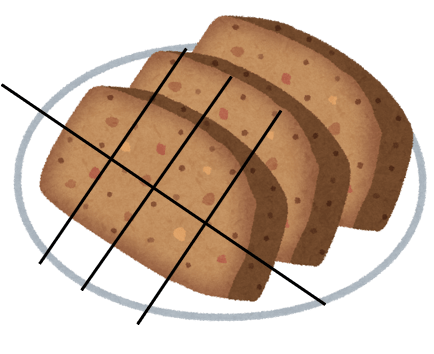

風味そのまま！『歯ぐきでつぶせる』 柔らかさ！ ケアミート・ケアフィッシュ
コンセプト
『肉』と『魚』の新しいスタイル！
～ こだわりぬいた『おいしさ』と『安全性』と『汎用性』 ～


ケアミート・ケアフィッシュとは？
歯ぐきでつぶせる、柔らかく飲み込みやすい『調理済み介護食』です。
『おいしさ』の理由は？
素材を生かした、製造方法を開発しました！
『安全性』の理由は？
高齢者施設と共同開発し、歯ぐきでつぶせるほど柔らかく仕上げました！
『汎用性』の理由は？
薄味仕立てで、どんな食事にも応用できるようにしました！
ラインナップ
ケアミート ～ 豚肉・鶏肉 🐷🐔 ～

- 【ラインナップ】 豚肉・鶏肉
- 【喫食者対象分類】 日本摂食嚥下リハ学会嚥下調整食2013コード分類 (3, 4)
- 【包装状態】 冷凍保存・真空パック
-
【ポイント】
- すりつぶせるため、歯がなくても安心して喫食できます！
- 薄味仕上げのため、和洋問わずお肉料理のベースとして使用できます！
- 『ほぐれやすいけど、バラつかない』が食べやすさに繋がります！
- 食材含有率の高さが、この美味しさを実現しました！
-
【特長】
- 弾力がないことが確認できます！
- 『餡』をかけると食べやすくなります！
- 動作が不自由な方はカットすると食べやすい！

ケアフィッシュ ～ 鯖・秋鮭・鰆・メルルーサ・赤魚 🐟🌊 ～

- 【ラインナップ】 鯖・秋鮭・鰆・メルルーサ・赤魚
- 【喫食者対象分類】 日本摂食嚥下リハ学会嚥下調整食2013コード分類 (3, 4)
- 【包装状態】 冷凍保存・真空パック
-
【ポイント】
- 繊維が気にならなくなるように特殊な加工をしているので、歯がなくても安心して喫食できます！
- 魚らしさを失わないことを目指しています！
-
【特長】
- 繊維がバラバラになっていることが確認できます！
- 『餡』をかけると食べやすくなります！
- 動作が不自由な方はカットすると食べやすい！
商品について
ケアミート 【豚肉】
- 【アレルギー含有食品】 卵、乳、小麦、豚肉、大豆、山芋
- 【栄養成分 (100gあたり)】 エネルギー：186kcal、タンパク質：9.7g、脂質：9.6g、炭水化物：14.2g、食塩当量：0.8g
- 【内容量】 800g / 1パック
ケアミート 【鶏肉】
- 【アレルギー含有食品】 卵、乳、小麦、鶏肉、大豆、山芋
- 【栄養成分 (100gあたり)】 エネルギー：167kcal、タンパク質：9.6g、脂質：7.6g、炭水化物：14.2g、食塩当量：0.8g
- 【内容量】 800g / 1パック
※ ケアミートは、【いか、ごま、さけ、鶏肉、えび、かに】を使用した設備で製造しております。
ケアフィッシュ 【サバ】

- 【アレルギー含有食品】 さば、小麦、大豆
- 【栄養成分 (100gあたり)】 エネルギー：247kcal、タンパク質：20.6g、脂質：16.8g、炭水化物：0.3g、食塩当量：0.3g
- 【内容量】 30g×10切れ / 1パック
ケアフィッシュ 【秋サケ】
- 【アレルギー含有食品】 さけ、小麦、大豆
- 【栄養成分 (100gあたり)】 エネルギー：133kcal、タンパク質：22.3g、脂質：4.1g、炭水化物：0.1g、食塩当量：0.2g
- 【内容量】 30g×10切れ / 1パック
ケアフィッシュ 【サワラ】
- 【アレルギー含有食品】 小麦、大豆
- 【栄養成分 (100gあたり)】 エネルギー：177kcal、タンパク質：20.1g、脂質：9.7g、炭水化物：0.1g、食塩当量：0.2g
- 【内容量】 30g×10切れ / 1パック
ケアフィッシュ 【メルルーサ】
- 【アレルギー含有食品】 小麦、大豆
- 【栄養成分 (100gあたり)】 エネルギー：77kcal、タンパク質：17.0g、脂質：0.6g、炭水化物：0g、食塩当量：0.4g
- 【内容量】 30g×10切れ / 1パック
ケアフィッシュ 【赤魚】

- 【アレルギー含有食品】 小麦、大豆
- 【栄養成分 (100gあたり)】 エネルギー：105kcal、タンパク質：17.2g、脂質：3.4g、炭水化物：0.1g、食塩当量：0.2g
- 【内容量】 30g×10切れ / 1パック
※ ケアフィッシュは、【えび、乳、牛肉、ごま、さば、鶏肉、豚肉、ゼラチン】を使用した設備で製造しております。
栄養士さん・委託業者の方へ
～ ケアミート・ケアフィッシュ開発の経緯 ～
はじめまして、株式会社 丸中食品と申します。弊社は長野県茅野市に拠点をおく食品製造業者です。 私たちは、高齢者施設向けに『真空調理されたチルド食品』の企画・開発・製造・配送をしています。 (クックチル事業)
そんな中、本来『刻み食』 『ムース食』などの加工された食事を喫食している高齢者でも、 安全にお召し上がりいただける介護食を目指して、ケアミート・ケアフィッシュを開発しました。 見た目や安全性はもとより、常菜と変わらず食欲をそそる形や風味にこだわり、試作を重ねました。 社会福祉法人 平成会と共同開発されたケアミート・ケアフィッシュは、すでに多くの施設で導入されており、ご好評をいただいております。
～ こんなお悩みはありませんか？ ～
形態食の加工作業に時間がかかり、苦労している
- 高齢者施設における給食のオペレーションで『非効率』 『大変』の象徴が形態食の対応です。
- 歯ぐきでつぶせる、柔らかさに仕上げているため、肉料理・魚料理を刻む必要がなくなります。
ちゃんと加工作業ができているか、神経質になっている
- 『たいへん。。』の要因は、加工作業の煩雑さだけではありません。
- 窒息事故のリスクと常に向き合うことは、神経質にならざるを得ません。本商品を使用すれば、加工作業から解放され、ワンランク上の食事を提供することができます。
働き方改革が推進できない
- 働き方改革の一環で、作業工程をシンプルにする工夫は重要です。
- 多種多様のメニューを調理する現場でありながら、メニューの肉料理・魚料理のベースが常に同じになることで、調理のマニュアル化が実現できます。
- 作業工程がシンプルになることは、スタッフの働きやすさ・定着率の向上に繋がります。
煩雑な在庫管理に苦慮している
- 形態食対応は、調理後の加工だけではありません。時に発注においても複雑な対応が求められます。
- 本商品は冷凍保存・真空パックされた状態で納品されるため、長く保存することができ、生鮮食品に比べて在庫管理が容易になります。
調理方法・注意点
調理方法
- ケアミート・ケアフィッシュは、冷凍保存・真空パックされています。
- スチームコンベクションオーブンなどで、中心温度が75℃になるまで加熱してください。 (お使いの調理器具によって調整してください。)
- ケアミート・ケアフィッシュは、非常に柔らかく仕上げており、型崩れしやすいため、スチームコンベクションオーブンによる加熱をおすすめしています。
- 食べやすい大きさにカット・味付けをして、盛り付けます。
注意点
- 必ず解凍してお召し上がりください。
- 一度調理した商品は、お早めにお召し上がりください。残った場合は、取り置きせずに廃棄してください。
- 次のようなときは、必ず医師にご相談ください。 ・飲食物や唾液が誤って気管に入ってしまった場合 ・アレルギー症状が出た場合 ・その他気になる症状があった場合
提供例
～ もっとおいしく、より安全にお召し上がりいただくための、一工夫 ～
- ケアミート・ケアフィッシュを利用することで、もともと刻み食を喫食していた方でも、安全に形のある食事をお楽しみいただけます。
- だしの効いた、とろみの量を多めに盛り付けることで、もっとおいしく、より安全にお召し上がりいただけます。

資料ダウンロード
クックチル資料ダウンロード ※ クックチル資料内に、ケアミート・ケアフィッシュのリーフレットが含まれます。ご注文について
- 現在、ケアミート・ケアフィッシュは取扱い事業者を拡大中です。 貴社の仕入先、委託事業者にお問い合わせください。
- お問い合わせフォームからのご連絡も受け付けております。
お問い合わせ
- 製造・販売元：株式会社丸中食品
- 電話番号：0266-73-3857
- 会社URL：http://www.marunaka-food.co.jp/